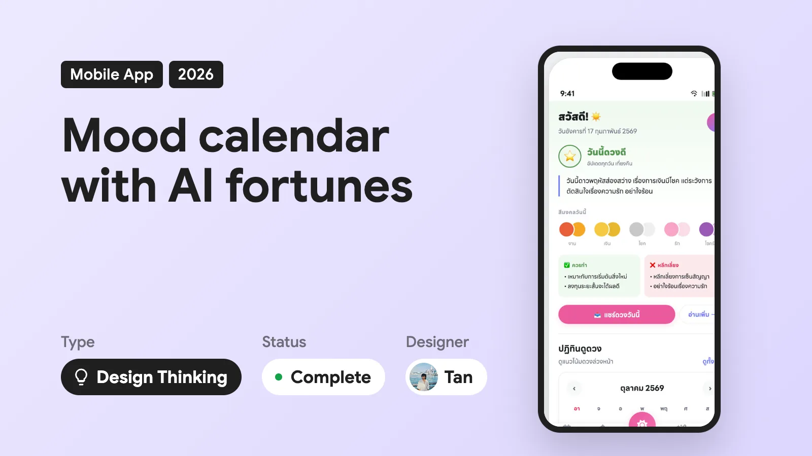
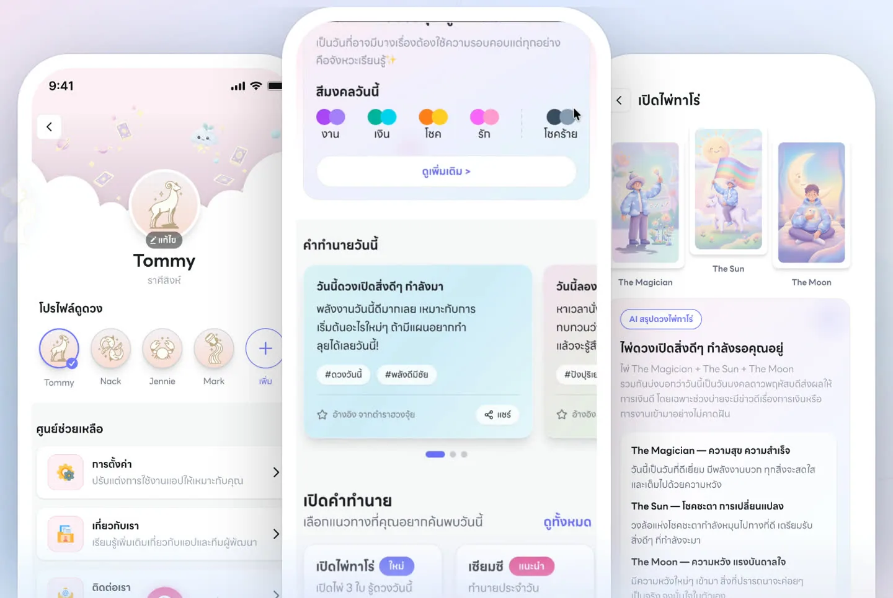
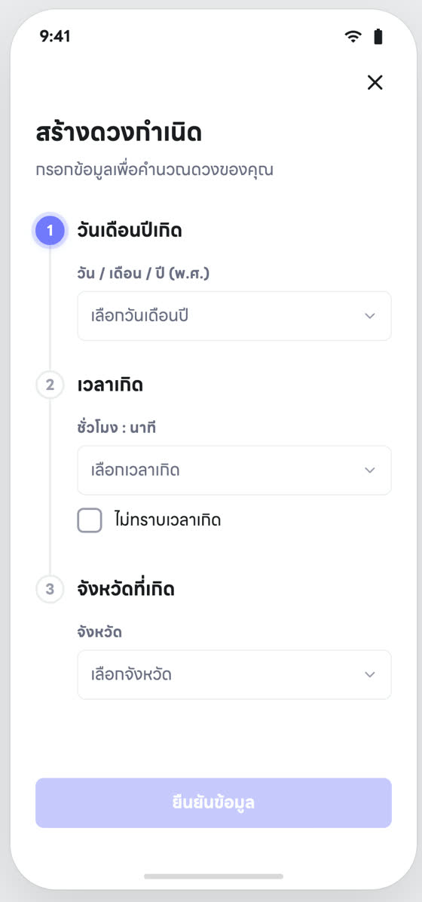
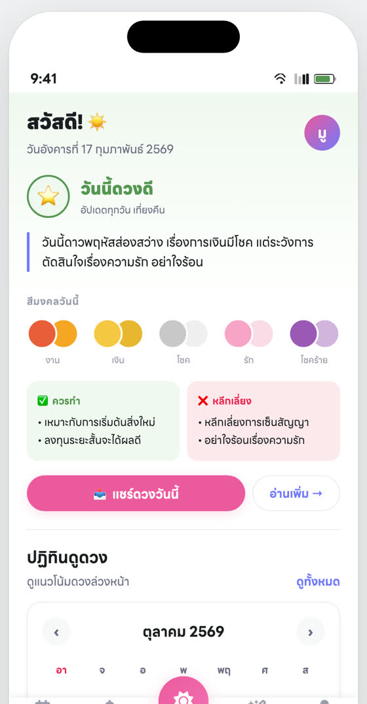
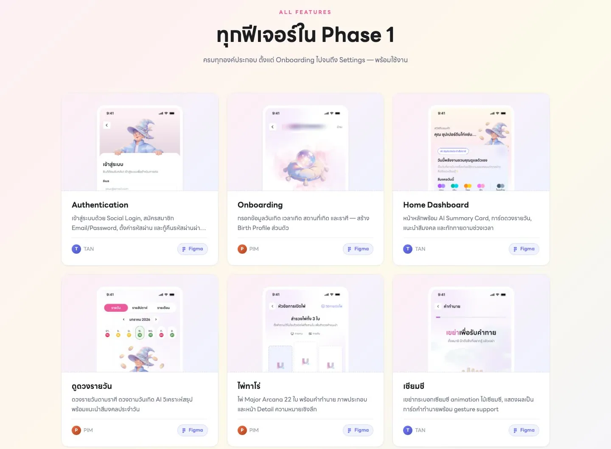
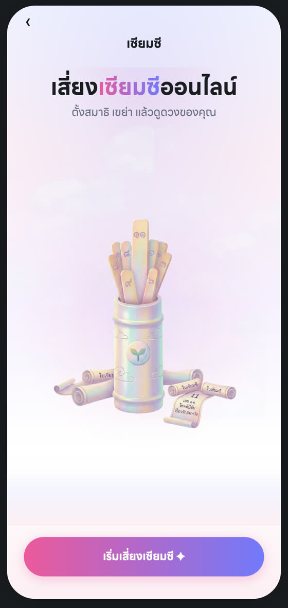
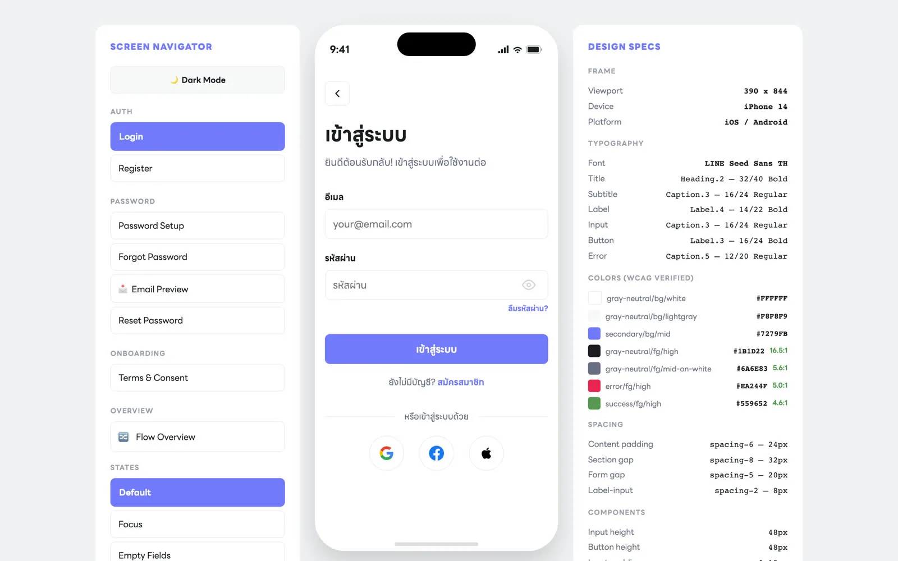
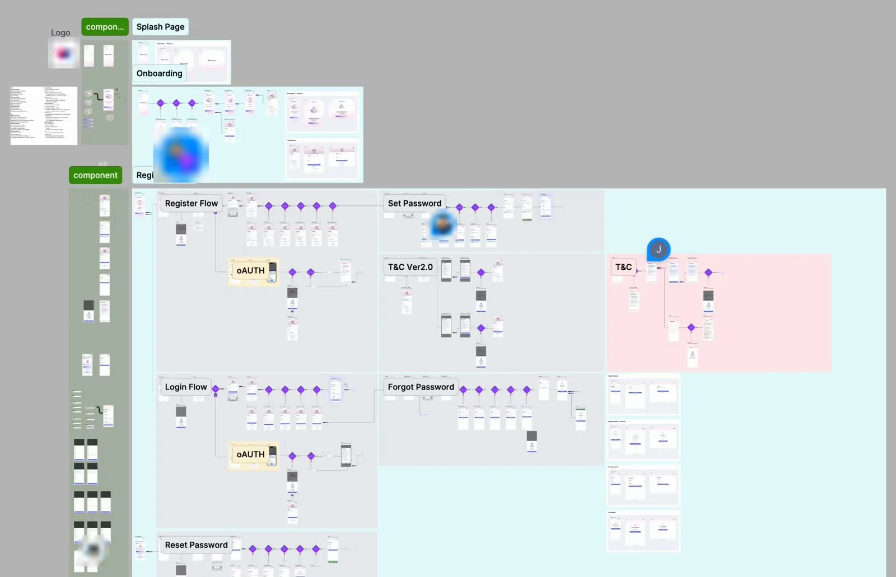
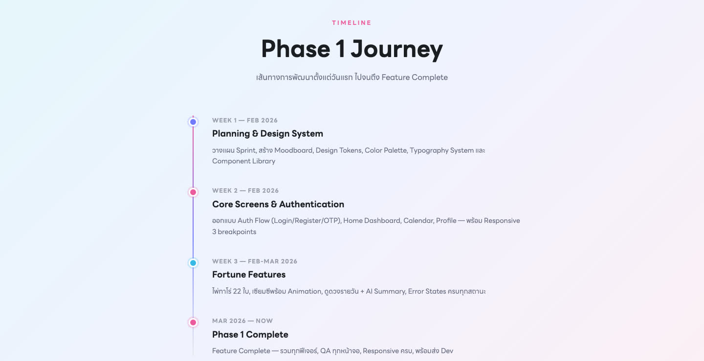
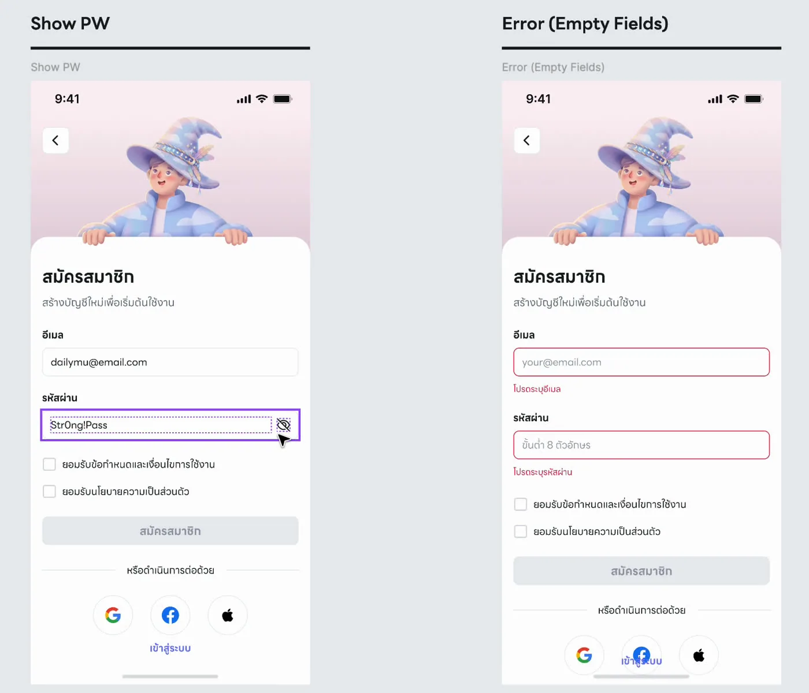

Mood Calendar That Gets You
Mood Calendar hasn't launched yet — but thinking, building and solving problems together as a team is the most valuable thing we got out of Phase 1

A daily fortune app that combines "traditional fortune-telling" with "AI analysis" — tarot, Siam Si fortune sticks and dream reading, all in one place
The problem
Why build Mood Calendar?

Sound familiar? You want today's fortune, but you have to open several apps — daily horoscope in one, tarot in another, dream reading somewhere else. And none of them is personalized to your birthday.
Traditional fortune-telling is stuck with fortune tellers
The traditional way means visiting a fortune teller, which many people can't easily do — it takes money, time and the nerve to go. Younger people curious about "spiritual things" have no convenient option.
Fortune apps are scattered
Daily horoscope in one app, tarot in another, fortune sticks on a website, dream meanings via a Google search — nothing brings it all together in one place that actually "knows" you.
Not personalized — everyone gets the same reading
Most horoscope apps give broad zodiac-sign readings and ignore your birth date, time and place — so the reading never feels like "mine".
The solution
Every practice in one app — personalized with a Birth Profile + AI


Birth Profile — knowing you from onboarding
We collect birth date, birth time, birthplace and zodiac sign up front, so every day's reading is "truly yours".
Every practice in one place
Daily horoscope, 22 tarot cards (Major Arcana), digital Siam Si fortune sticks and AI dream reading — all in one app
AI makes the reading easy to understand
No need to study the texts yourself — AI analyzes and sums it up as easy-to-read daily advice, plus a lucky color for the day
What we built
Flip the cards — each one is a real feature in Mood Calendar


Tap a card to flip it
Tap the card again to close it
Authentication
Social Login, Email/Password, OTP Recovery + Account Management
Home Dashboard
AI Summary Cards + Daily Fortune + Time-based Greetings + lucky colors
Birth Profile
Collects birth date, birth time, birthplace and zodiac sign to personalize readings
Push Notifications
Notifications for daily fortunes, auspicious days and special events
Hacking the problems
The behind-the-scenes wasn't always pretty — but every problem made us better

A design system built from zero
The team had no design system, so we had to define every token — color, typography, spacing, radius. The whole first week went into laying the foundation.
A tarot animation you can "feel"
Tarot cards aren't just open and close — they need a 3D flip, shimmer and glow to feel "sacred". We tried CSS 3D transforms many times until the feel was right.
3 people, 3 styles — how do we merge?
Each person designed a different flow, with different spacing and color choices. Without rules, the output would never look like one product.
Responsive that works at every breakpoint
A fortune app carries a lot of content — fortune cards, 22 tarot cards, a dashboard. The layout has to hold up on mobile, tablet and desktop without losing anything.
Our team
3 people, 3 strengths — split by flow, merged into one

- Authentication Flow
- Home Dashboard
- Siam Si (fortune sticks)
- Design System Lead
- Daily Horoscope
- Tarot Cards
- Zodiac Screens
- Dream Interpretation
- Profile / Settings
- Push Notifications
Timeline
From plan to reality — 4 intense weeks

Planning & Design System
Set the scope, create design tokens, lay out the component library, assign flows to each person
Core Screens & Auth
Onboarding, Login/Register, Home Dashboard — the app's foundation
Fortune Features & Animations
Tarot, Siam Si, dream reading, daily horoscope — with animation that adds some magic
Phase 1 Complete + QA
Check every screen, every flow, every breakpoint — ready to hand the design to dev
Key Takeaways
What the team learned building Mood Calendar

The first week felt very slow because the time went into tokens and components. By weeks 2–3 everyone was much faster, because no one had to decide on colors or spacing again.
With 3 people working at once, the output won't feel like one product unless we talk — weekly reviews + shared design tokens made merging smooth
Tarot and Siam Si need to feel "special" to the user — not a plain transition, but timing, easing and glow that create an emotional moment
Design for mobile first, then scale up — content doesn't disappear on small screens, and the layout doesn't break with real data